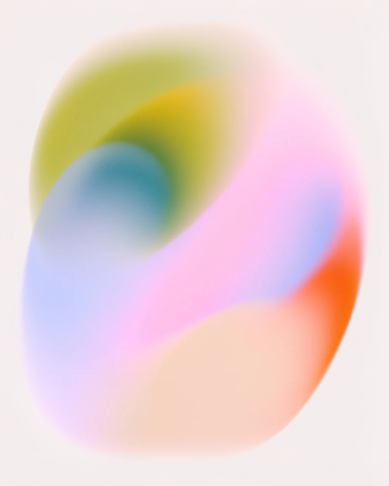
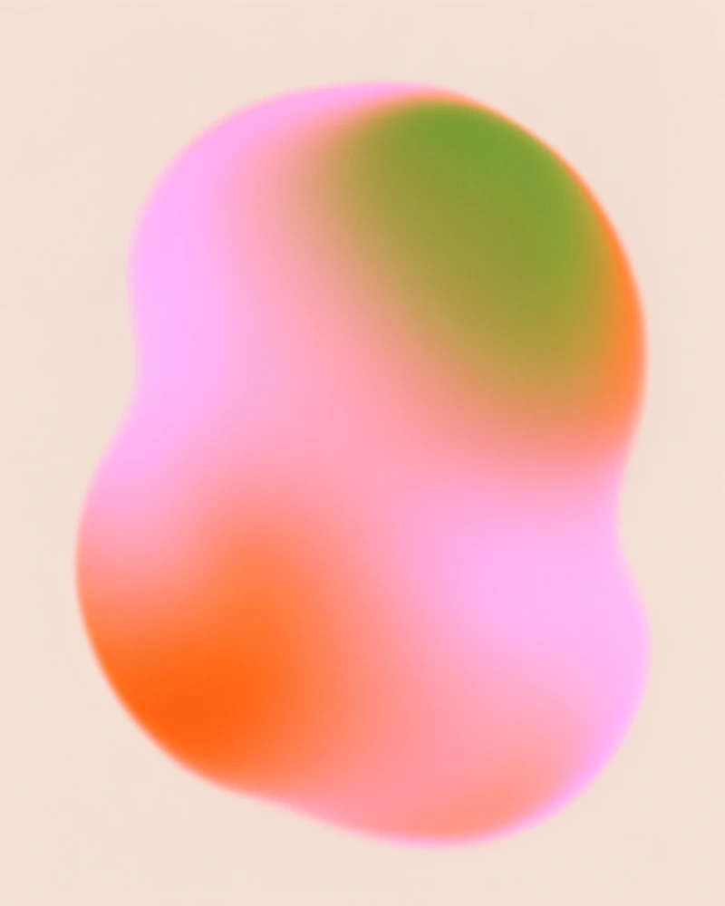
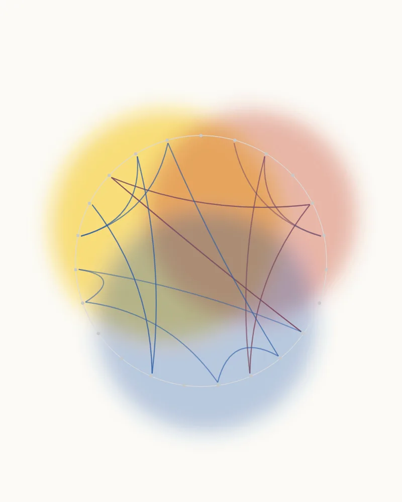
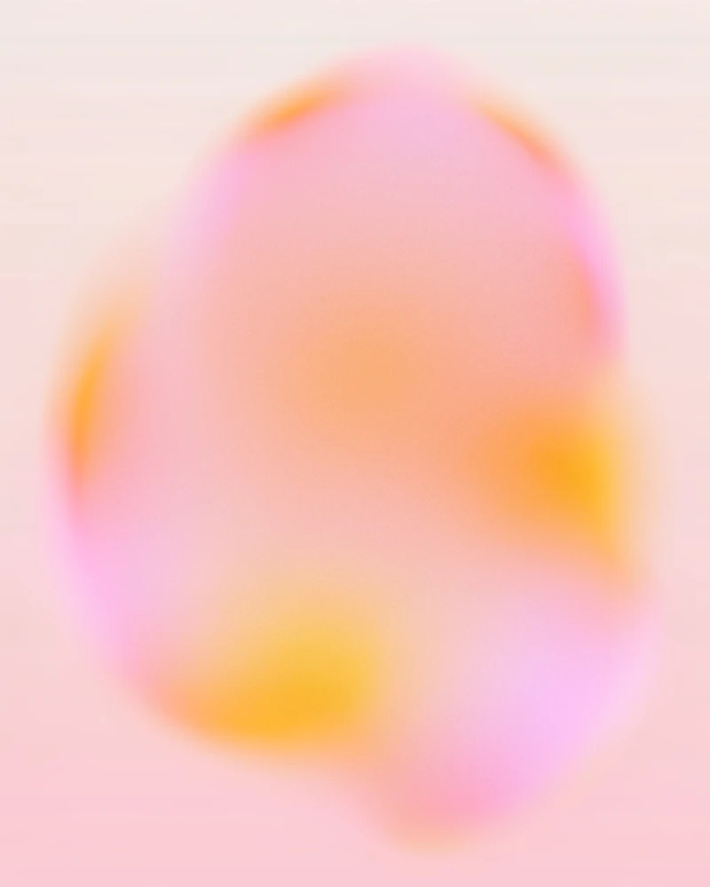

Articles per penjar
Articles que encara s'estan fent. Les dades, els gràfics i el text poden canviar abans de publicar-se.

Navegar sense mapa
El 1976, una canoa hawaiana va arribar a Tahití sense instruments, guiada per un navegant d'una petita illa de Micronèsia. Com es troba una illa llegint estrelles, onades i ocells.

Com vam començar a tancar el forat de l'ozó
Una capa de tres mil·límetres, un forat que ningú no veu i 198 parts que es van posar d'acord. Com vam començar a reparar l'ozó, per què encara cal paciència i què queda per fer.

El mapa que no va aturar el còlera
Londres, 1854: més de cinc-centes morts en deu dies al voltant d'una bomba del Soho. No el va aturar cap mapa: un metge que preguntava casa per casa, un capellà i una ciutat que no se'ls va creure.

Ciència entre enemics
En plena guerra freda, els rivals van congelar les disputes sobre l'Antàrtida i la van reservar a la pau i a la ciència. Del Tractat al CERN, l'estació espacial i SESAME: què aconsegueix la ciència entre enemics, i què no.

Els científics que van morir de gana al costat de les llavors
Durant el setge de Leningrad, els botànics de l'institut de Vavílov van custodiar la seva gran col·lecció de llavors mentre morien de gana. Què hi ha de cert en la història, i què en queda avui a Svalbard.

La llengua que va néixer en un pati de Managua
Entre finals dels setanta i principis dels vuitanta, infants, adolescents i joves sords de Managua van fer néixer una llengua de signes nova a partir dels signes de casa. Què ens explica sobre el llenguatge i sobre ser sord.

El sobre que ningú no pot obrir
Cada missatge de WhatsApp o Signal viatja tancat amb una clau que no té ni l'empresa que el porta. Com funciona el xifrat d'extrem a extrem, fins on és segur i què diu de nosaltres saber callar.

El viatge de la pizza
Un pa pla nascut abans de l'agricultura, un fruit andí que Europa va témer com a verí i una búfala de l'Índia. Com el pa de carrer de Nàpols va conquerir tot el planeta.

Per què riem?
Riem trenta cops més acompanyats que sols, i gairebé mai per un acudit. Dels duels inuit als grans simis: quan un reflex animal esdevé pacte i tribunal.

Per què dormim?
El dormitori solitari és una raresa històrica. De les fregates que dormen volant a les fogueres del Kalahari i l'inemuri japonès: com modela cada cultura el son.

La pols del Sàhara alimenta l'Amazònia
El vent s'endú cada any milions de tones de pols del Sàhara fins a Amèrica. Una part cau sobre l'Amazònia i li porta el fòsfor que la pluja s'emporta.

On va el CO₂ que emetem
Cada any aboquem a l'aire més de 40.000 milions de tones de CO₂, però menys de la meitat s'hi queda. Seguim la resta fins al fons del mar i les fulles dels boscos.